Save & load presets
Save bake settings, lighting choices, passes, naming and scene batch entries. Select a saved setup and click Load; Save / Update replaces an existing preset with the same name.
View option details →Bake scene lighting, post-process & decals into texturesBake textures & scene lighting. Flatten decals & overlays. Build UV atlases. Export GLB.
Save bake settings, lighting choices, passes, naming and scene batch entries. Select a saved setup and click Load; Save / Update replaces an existing preset with the same name.
View option details →Delete a saved preset after confirmation, or Reset to Defaults to clear the active setup. Reset keeps saved presets and project assets.
View option details →Missing mesh, material or scene references warn while valid options still load. Presets are stored per project and remain available after reopening Unreal.
View option details →Export selected level mesh actors into one binary glTF file with component materials and textures, with optional JPEG output and adjustable compression.
Export guide ↓Create a new one-slot Static Mesh, normalized UV0 atlas, combined texture set, and generated baked material while preserving the original source mesh. Its UV workflow includes Exist UV for an authored channel, Repack UV for existing islands, and Generate UV Atlas for a fresh layout.
UV Builder workflow ↓Choose Export JPG for compatible embedded textures and adjust Compression / Quality. Use lossless output when normal-map or numeric-mask accuracy matters.
View option details →Use one shared texture set and generated material instance for all slots of a Static Mesh. Preserve the existing selected UV channel and mesh; use unique islands across slots.
Combine materials guide →Bake LOD0 geometry from Static Mesh and Skeletal Mesh components across normal, indexed, batch, UV-channel, generated-material, and GLB workflows. UV Builder remains Static Mesh-only.
Support details ↓Bake one selected Material Index for focused output, or enable Bake All Material Slots to process every valid mesh material slot into the selected texture passes.
Selection guide ↓Queue multiple scene components, use one shared material or each mesh's assigned materials, and choose a combined atlas or separate Batch Per Mesh texture sets.
Batch modes ↓Choose the LOD0 UV channel used by every baked pass, decal, Light Data texture, and Auto Material sampler. Optional validation checks empty, invalid, and overlapping UV data.
UV channel guide ↓Leave the panel Material empty to use the selected component's Material Index slot, followed by the mesh asset slot. Select a panel Material when the slot is empty or when an intentional override is needed.
Material rules ↓Choose 0–64 pixels with a default of 3. Values 1–64 apply an exact dilation distance; 0 provides unlimited coverage for regular baked textures.
Pixel Cover guide ↓Create or intelligently update a generated master and material instance from the baked passes, then assign the result to supported mesh components or assets.
Auto Material guide ↓Capture separate front/back lighting with 2Sided(Sign), or enable ordinary two-sided rendering with 2side. Both choices are saved independently and sit beneath ORM in Bake Settings.
View option details →On by default. Preserve component transform, bounds, orientation, and primitive data when baking triplanar, PixelNormalWS, object-space, and world-aligned material logic. Saved preset choices are retained.
Material controls ↓Bake the real displacement input and adjust Minimum, Maximum, Contrast and Strength in the generated instance.
View option details ↓Bake Albedo, Normal, Roughness, Metallic, Specular, AO, Light Data, Displacement, Opacity Mask, Emissive, AlphaBlend, and CustomMap with per-pass color-space control.
Output passes ↓Pack Ambient Occlusion into red, Roughness into green, and Metallic into blue for a compact material-data texture with Linear sampling.
Packing reference ↓Bake the real material Opacity Mask as a standalone pass, apply Mask Threshold cleanup when needed, or enable RGBA to place the mask in Albedo/Diffuse alpha while preserving the RGB color result.
RGBA and mask controls ↓Choose output format and resolution, per-pass Linear / Color, Sharpness, Normal Intensity and Invert Normal. Mask Threshold 0 preserves the evaluated grayscale mask.
View option details →Combine the selected lighting data into BaseColor or save Light Data separately. The selected lighting source determines whether it stores visibility, illumination or rendered appearance.
View option details →Evaluate decal material graphs, UV controls, tint, instance parameters and static switches before compositing selected passes. Decals have their own Height Blend, Strength and Contrast.
View option details →Flatten compatible planar masked/translucent cards using UV0. Set Projection Depth in centimeters and adjust the overlay’s independent Height Blend controls.
View option details →Bake Lumen scene lighting and reflections with Rendered Scene (Preview), capture Scene Lights or Shadows, or read saved Lightmass with Existing Baked Lightmap. The selected workflow determines the captured data.
View option details ↓Choose Light and Shadows for direct lights, sky and shadows, or + Postprocess to include inherited scene GI and indirect-light settings.
View option details →Point, Spot, Rect, Directional and Sky Lights are handled. Emissive illumination depends on the selected GI or saved Lightmass workflow; CPU fallback excludes emissive GI.
View option details →Display captured appearance through Unlit Emissive, or add baked lighting to a Default Lit material with Baked Emissive. The two choices are mutually exclusive.
View option details →Quality / Optimization offers Draft, Standard and High plus Low memory captures (1K), on by default. Capture budgets and output texture size are separate; Lumen quality follows scene post-process settings or engine defaults.
View option details →Auto Exposure uses capture-view exposure. Exposure EV controls brightness; Shadow Strength applies to the Shadows source.
View option details →Create Unreal assets below a valid /Game folder, or save outputs relative to the mesh or material path. GLB exports selected Level Editor meshes.
View option details →Choose mesh, material or custom naming. Textures use T_<Name>_<Pass>; generated masters and instances use M_ and MI_. Source-name mode omits extra BakedTexture text.
View option details →Enable Overwrite existing files without asking to replace matching outputs without a prompt. Leave it off to keep confirmation; presets retain the choice.
View option details →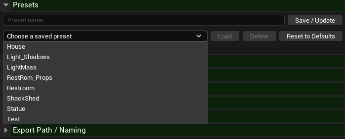
Enter a name to save the setup. Saving an existing name replaces that preset.
Choose a preset and click Load. Restores bake, material, lighting/postprocess, pass, color-space, export and naming choices, references and batch scene entries.
Unavailable meshes, materials or level instances warn while valid settings still load. Open the matching level and replace unresolved references.
Removes the selected saved preset after confirmation; keeps current settings and project assets.
Restores factory options and clears current mesh/material selections, passes and batch entries. Keeps saved presets and project assets.
Per project in Saved/SPAMaterialBaker/Presets. Older presets missing optional fields receive defaults. World Space Correction and Low memory captures (1K) default to on; explicitly saved choices remain intact. The two-sided choices persist independently. Legacy covered-internal-face and persistent lighting-result-cache values are ignored. Hidden Calculation Method and Camera Distance values remain stored for preset compatibility. Malformed or unsupported settings leave the current setup unchanged.
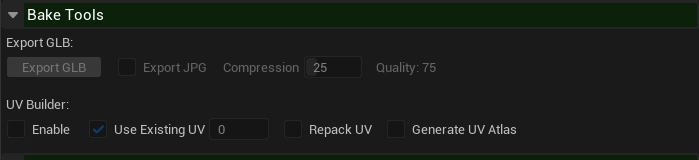
| Option / step | Information |
|---|---|
| Export GLB | Select one or more Static or Skeletal Mesh actors/components in the Level Editor, then click Export GLB. Exports the selected meshes to one binary glTF file with component transforms, assigned materials and textures. |
| Filename | Defaults to the selected mesh asset name. Multiple selections add the remaining mesh count. |
| Baked color and textures | Preserves baked Unlit appearance without Unreal view-exposure compensation. Handles HDR/linear readback without permanently changing source compression or assignments. Vertex colors are omitted to avoid tinting baked color. |
| Export JPG | Uses JPEG for compatible GLB textures to reduce file size. Keep lossless output for normal maps and numeric masks when accuracy matters. |
| Compression / Quality | Compression range: 0–99. Higher compression gives smaller, lower-quality JPEGs. Displayed Quality = 100 − Compression. |
| Supported texture passes | GLB does not support every baked pass as a standard material input. It exports compatible glTF material textures; Unreal-specific outputs and custom passes may not be represented. Keep the separately baked texture assets when those passes are needed in another workflow. |
| Displacement limitation | GLB does not carry the baker’s displacement texture as a displacement material or Unreal Nanite tessellation. Export actual displaced geometry when silhouette detail is required. |
| Option / step | Information |
|---|---|
| Generated output | Creates a new Static Mesh with one material slot, normalized UV0 atlas, combined textures and a generated material. Preserves the original mesh and materials. |
| Requirements | Use Single Mesh with valid Static Mesh LOD0 geometry and at least one material slot. Skeletal Meshes, Rendered Scene (Preview) and Existing Baked Lightmap are unsupported by UV Builder. Those lighting sources require the original receiver layout. |
| Enable UV Builder | Enables Bake All Material Slots, mesh-UV baking and Auto Material. Disables Batch Meshes, Use Mesh Materials, Batch Per Mesh, path-relative naming and direct Assign to Mesh. |
| Exist UV | Uses an authored source channel. Choose unique, non-overlapping islands across all slots. Initial preference is UV1 when multiple channels exist. |
| Repack UV | Preserves existing island shapes while repacking into normalized 0–1 space. Use when seams and topology are suitable but island placement or scale needs consolidation. |
| Generate UV Atlas | Creates a fresh layout. Use when existing UVs overlap, tile heavily, waste space or cannot safely hold all slots in one texture set. |
| Keep the original mesh instead | Use Combine Material Slots to share textures across slots while preserving the original mesh and its selected UV layout. |
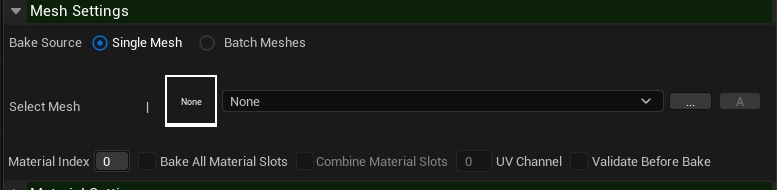
Select a Static Mesh or Skeletal Mesh actor/component in the Level Editor viewport and assign that scene selection. The component supplies its real transform, bounds, and material overrides.
Static and Skeletal Meshes support single-index and all-slot baking, batches, GLB selection, UV-channel selection and generated-material assignment.
Enabling UV Builder with a Skeletal Mesh is rejected. Use a normal Skeletal Mesh bake or Batch Per Mesh instead.
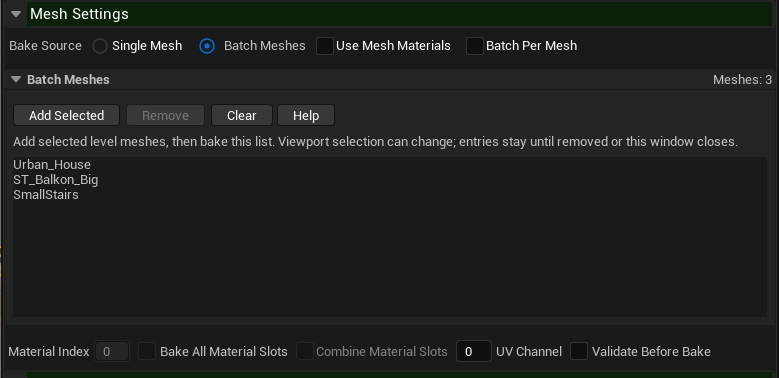
Bakes multiple scene mesh actors or components in one run. Select items in the viewport and click Add Selected to queue them.
Batch Meshes accepts level scene components only. Select Static Mesh or Skeletal Mesh actors/components in the viewport and click Add Selected. Content Browser-only entries cannot supply component transforms or correct Light Data shadow tracing.
| Mode | Material source | Output behavior | Best use |
|---|---|---|---|
| Batch Meshes | One material selected in Material Settings | One combined batch/atlas output set | Apply the same material to several meshes |
| + Use Mesh Materials | Each queued mesh's assigned material and slot mapping, instead of one manually selected material | One combined atlas using mesh/material pairs | Mixed materials consolidated into shared outputs |
| + Batch Per Mesh | Always resolves each mesh/component slot; no panel material is required, even with Use Mesh Materials off | A separate named texture set for every mesh | Independent assets and clean per-object delivery |
Queue controls: Add Selected queues level actors/components. Remove removes highlighted entries; Clear empties the queue. Content Browser-only selections cannot provide the required scene data.
| Option | Behavior | Requirements and output |
|---|---|---|
| Material Index | Selects one slot. With Material empty, checks the component override first, then the mesh asset slot. | Single-index baking. Disabled by Batch Meshes, Bake All Material Slots and UV Builder. |
| Bake All Material Slots | Bakes every material slot into the selected outputs. | Available for single- and multi-slot meshes. |
| Combine Material Slots | Combines one Static Mesh’s slots into one texture set and material instance using the selected existing UV channel, including UV1+. Preserves the original mesh and UVs; creates no replacement mesh. | Requires Bake All Material Slots and Auto Material. Unavailable for Batch Meshes, Skeletal Meshes or UV Builder. Use unique, non-overlapping UVs across all included slots. Apply the resulting instance to the desired slots; the original mesh is not automatically reassigned. Names include _Combined and the UV suffix. |
Selects the zero-based LOD0 texture-coordinate channel for the bake. The value is clamped to channels available on the selected Static or Skeletal Mesh.
| Channel / behavior | Information | Example |
|---|---|---|
| UV0 | Normal material UVs. Suitable for unique islands or intentionally tiled/stacked material-only workflows. A normal bake does not create multiple UDIM output files. | 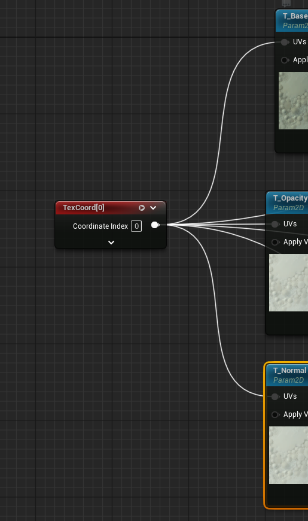 |
| UV1+ | Alternate layouts, unique unwraps or lightmap-style UVs. Output names receive _UV1, _UV2 and so on. The generated Texture Coordinate node uses the selected index. | 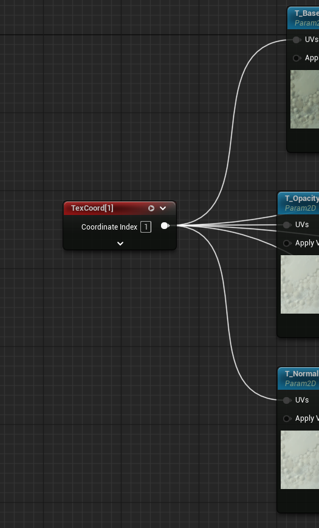 |
| Passes and generated materials | Albedo, masks, normals, ORM, decals, Light Data and Auto Material samplers follow the same selected channel. World Space Correction affects scene/object inputs, not channel selection. | |
| Overlaps and padding | Use unique, non-overlapping UVs across included surfaces for Light Data, decals, overlays, UV Builder output and conventional reusable texture sets. Overlapping surfaces write into the same texels. Intentional tiling/stacking can work for material-only bakes; an overlap is not automatically a failure. Leave enough island spacing for Dilation UV / Pixel Cover. | |
| Validation and first test | Validate Before Bake is optional and off by default. If it reports intentional overlaps, disable it to continue. The extra Proceed/Cancel UV warning is disabled. Test one material index at 1024×1024 before raising resolution. | |
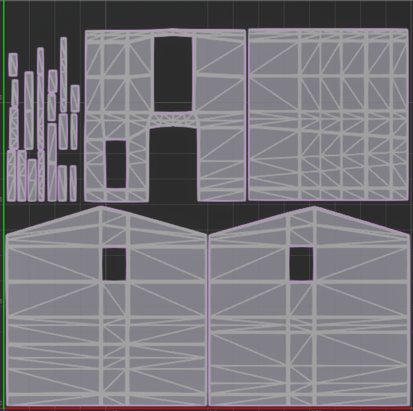
Use a unique layout so each receiver surface has its own texture space. Select that UV channel in the baker and leave padding between islands for filtering and Dilation UV.
Avoid stacked or overlapping receiver UVs for lighting and decals: different surfaces can write conflicting values into the same texels. This screenshot illustrates the layout; use Validate Before Bake to check your own mesh.
Validate Before Bake optionally checks finite/non-empty UV data and overlap problems. Off by default. The separate Proceed/Cancel UV Channel Warning is currently disabled.

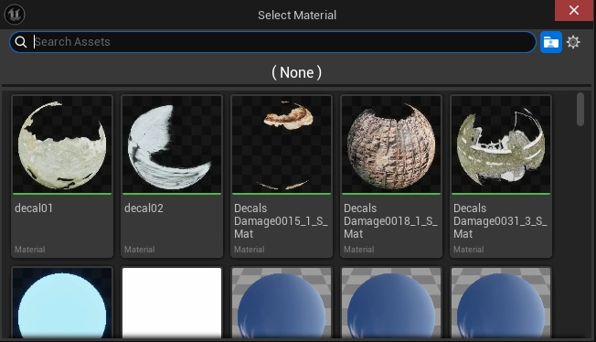
Optional in a normal single-index bake. Leave it empty to use the selected scene component or mesh asset slot. Choose a /Game material when that slot is empty or to intentionally override an occupied slot.
The baker reads Material Index from the selected scene component first. If no component override exists, it reads that slot from the Static or Skeletal Mesh asset.
The selected material becomes an override. It is baked onto the selected mesh UVs instead of the material currently assigned to that mesh slot.
It is treated as a decal source, not the base mesh material. The baker ignores it as the base and falls back to the selected mesh slot.
Baking stops unless a valid override material is selected. Assign a slot material or choose an override in Material Settings.
The selected material changes what is evaluated; it does not change the target geometry or UVs. The selected mesh always provides the bake surface and selected UV channel.
On by default; saved preset choices are retained. Preserves component transform, bounds, orientation, and primitive data for world-space, object-space, triplanar, and PixelNormalWS material logic.
Dilation UV copies the nearest valid island pixel outward to reduce seams and filtering artifacts, with straight extension at horizontal and vertical edges. Pixel Cover controls the padding distance; it does not resize or repack UV islands.
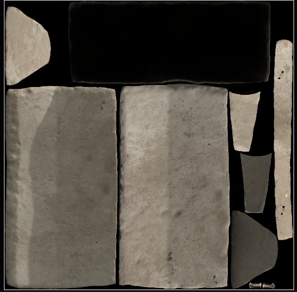
No padding beyond the UV islands.
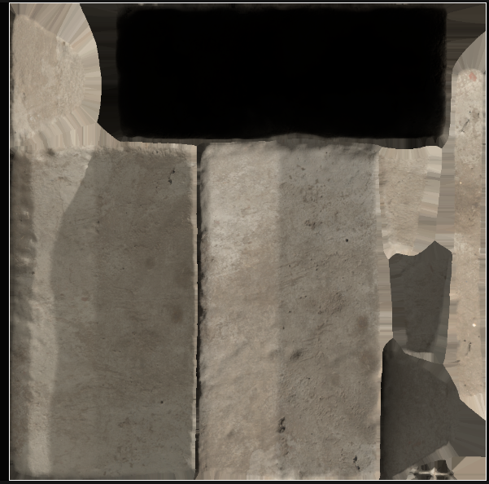
Unlimited padding for regular baked textures.
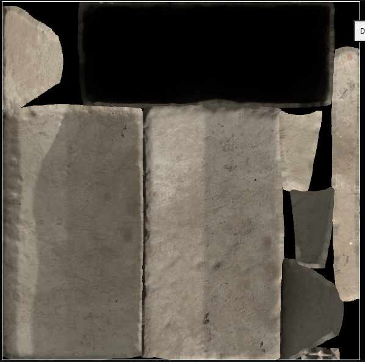
Padding extends 10 pixels from valid island edges.
| Setting | Padding behavior | When to use it |
|---|---|---|
| Dilation UV off | No edge expansion. Pixel Cover is disabled and has no effect. | Keep the rasterized island coverage without padding. |
| Pixel Cover 0 | Unlimited padding for regular baked textures, filling reachable empty texels. | Extend regular texture coverage across unused UV space. Lighting and normal background rules still apply. |
| Pixel Cover 3 (default) | Expands valid island edges by 3 pixels. | A starting point for ordinary 1K test bakes. |
| Pixel Cover 1–64 | Sets the exact expansion distance in output pixels. | Increase when seams remain and islands have enough spacing. Reduce if neighboring islands cause color bleed. |
Resolution and spacing: The same pixel distance occupies a smaller UV area at higher output resolutions. Leave enough space between islands for filtering and mipmaps. Padding applies to single-index, Bake All Material Slots, batch atlas, Batch Per Mesh and optimized texture outputs.
Light Data and normals: Multiplicative Light Data keeps uncovered pixels neutral white. Separate Rendered Scene Light Data and unused normal pixels use black outside coverage/padding; generated materials decode empty normal pixels as a flat normal. Padding follows rasterized UV coverage.
UV addressing: Regular material-only bakes preserve intentionally tiled or stacked UVs and use Wrap addressing. Lighting, decals and mesh overlays use Clamp. Overlapping surfaces can produce conflicting output and longer captures; choose a unique lighting UV channel where available. Validate Before Bake is optional; the additional Proceed/Cancel UV Channel Warning is disabled.
| Option / output | Behavior and controls | Example |
|---|---|---|
| Auto Material off | Creates and saves textures only. No generated master or material instance. | 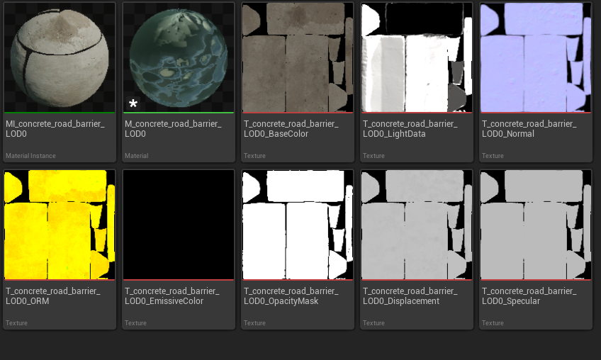 |
| Auto Material on | Creates or rebuilds the generated master, then creates an instance connected to the selected passes, packing choices and UV channel. The Texture Coordinate node uses the selected channel, including UV1+. Rebaking refreshes generated masters and loaded instances with the correct color/data samplers. | 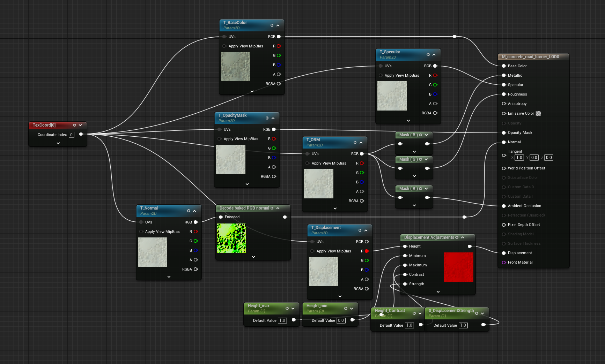 |
| Material instance & displacement | Select Displacement to expose these controls in the instance Displacement group. Supported in every lighting mode, including Existing Baked Lightmap.
Uses the effective source instance’s Magnitude, Center, tessellation and fade settings, including in batches that share a master. Compatible rebakes preserve scalar adjustments; neutral defaults preserve evaluated height.
UV coverage and dilation apply. Sharpening is skipped to avoid height ringing. Check islands, padding and scaling before increasing strength. | 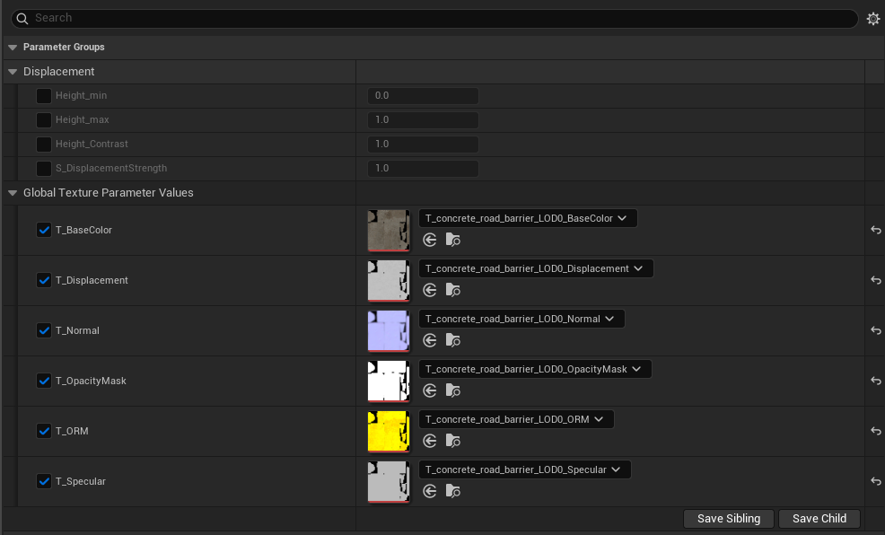 |
Enable Auto Material and rebake after changing shading or graph settings. Captured appearance retains BaseColor naming even when connected to Emissive; the actual Emissive pass remains separate.
Mesh Overlay diffuse is composited during material-only baking when Light Data is off. Rendered captures avoid a second diffuse composite; translucent overlays preserve opaque receiver coverage.
Available only with Auto Material enabled. After generation, assigns the material to the relevant Static or Skeletal Mesh component or asset slot.
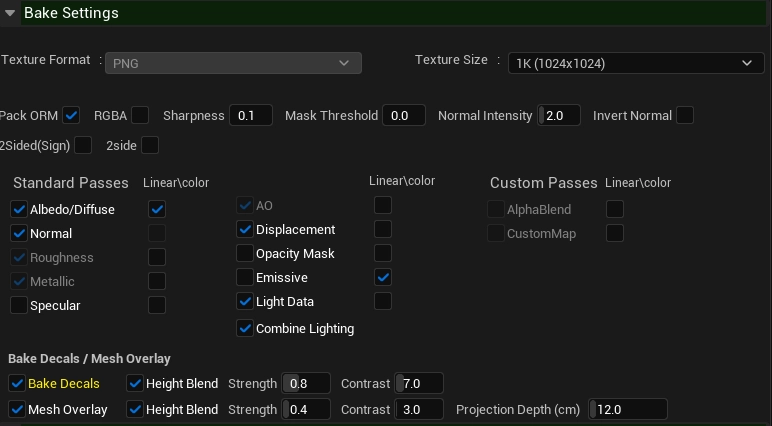
Sets the square output texture resolution. Use 1K while testing and increase it for final output. Low memory captures (1K) limits internal GPU captures separately; a larger output cannot restore detail lost at capture time.
Higher resolution increases lighting bake timeIncreasing Texture Size adds more texels to sample and process. Doubling the width and height creates four times as many output pixels; lighting bake time and memory use can increase substantially. Actual timing depends on the scene, capture settings and hardware. Low memory captures (1K) caps internal capture resolution, not all output sampling work.
Writes Ambient Occlusion into red, Roughness into green, and Metallic into blue.
Beneath ORM. Captures separate front/back lighting selected by TwoSidedSign in the generated material and also enables two-sided rendering. Off by default.
Useful for thin surfaces visible from both sides, such as curtains, fabric screens, leaves and signs, when the front and back need different baked lighting. Use ordinary 2side when both faces can share the same baked appearance.
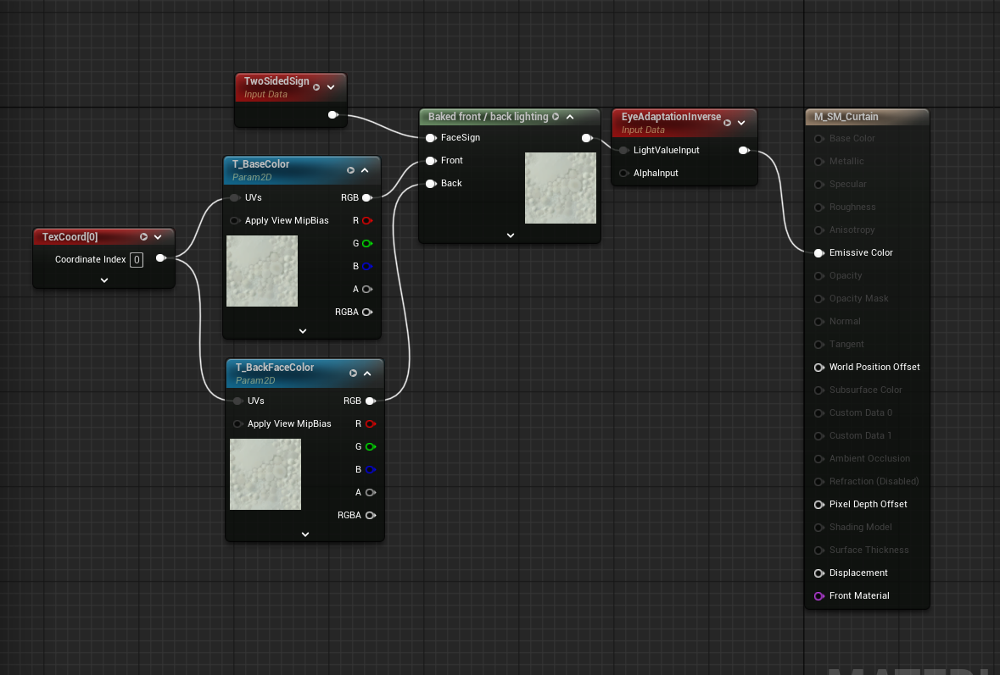
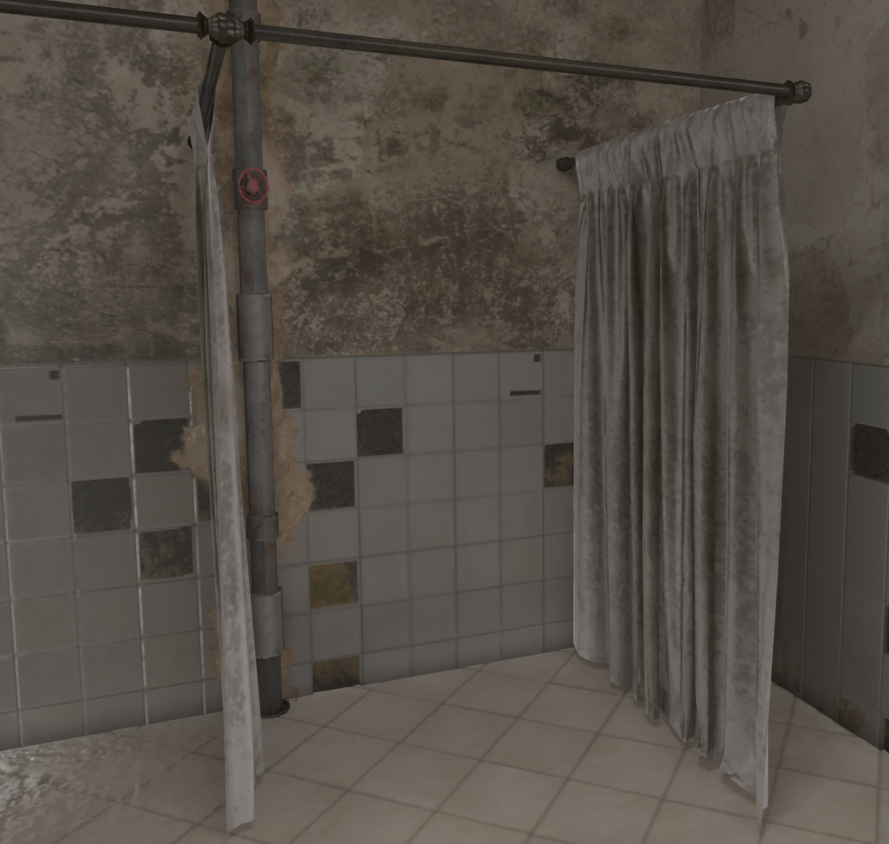
Beside 2Sided(Sign). Enables ordinary two-sided rendering without separate front/back capture. Off by default. Both options are saved independently.
Packs the real material Opacity Mask into Albedo/Diffuse alpha while preserving RGB. It automatically enables Base Color and Opacity Mask and saves one RGBA Albedo texture.
Applies post-bake sharpening. High values can create ringing around hard edges and UV boundaries.
Controls standalone or RGBA-packed Opacity Mask cleanup. Zero preserves the evaluated grayscale mask; higher values create a harder black/white cutoff.
Final normal strength: 0 = flat, 1 = original, higher = stronger.
Flips the normal map green channel for applications using the opposite Y convention.
Each pass has a color-space checkbox: unchecked means Linear, checked means Color/sRGB.
| Pass / option | Information |
|---|---|
| Albedo / Diffuse | Evaluated base color. Can receive baked Light Data and decals. |
| Normal | Evaluated normal with Normal Intensity and Y inversion. Unused pixels are black outside coverage/padding; generated materials decode them as a flat normal. |
| Roughness | Standalone or green channel in packed ORM. |
| Metallic | Standalone or blue channel in packed ORM. |
| Specular | The material's specular response as a separate texture. |
| Ambient Occlusion | Standalone or red channel in packed ORM. |
| Light Data | Stores the selected source: shadow visibility, scene illumination, saved Lightmass or captured appearance. Save separately or enable Combine Lighting. |
| Displacement | Reads the real Displacement input. Generated instances expose range, contrast and strength in every lighting mode. |
| Opacity Mask | Reads the real material Opacity Mask input. Save it separately, clean it with Mask Threshold, or enable RGBA to pack it into Albedo alpha. |
| Emissive | Captures material emission with HDR-aware processing. Does not calculate emitted light on neighboring surfaces. |
| AlphaBlend | Custom pass capturing alpha blending through the AO route. |
| CustomMap | Custom output stored through the AO channel. |
| Combine Lighting | Combines selected lighting into Albedo/Diffuse in linear space, preserves alpha and omits a separate _LightData asset. Combined appearance uses _BaseColor.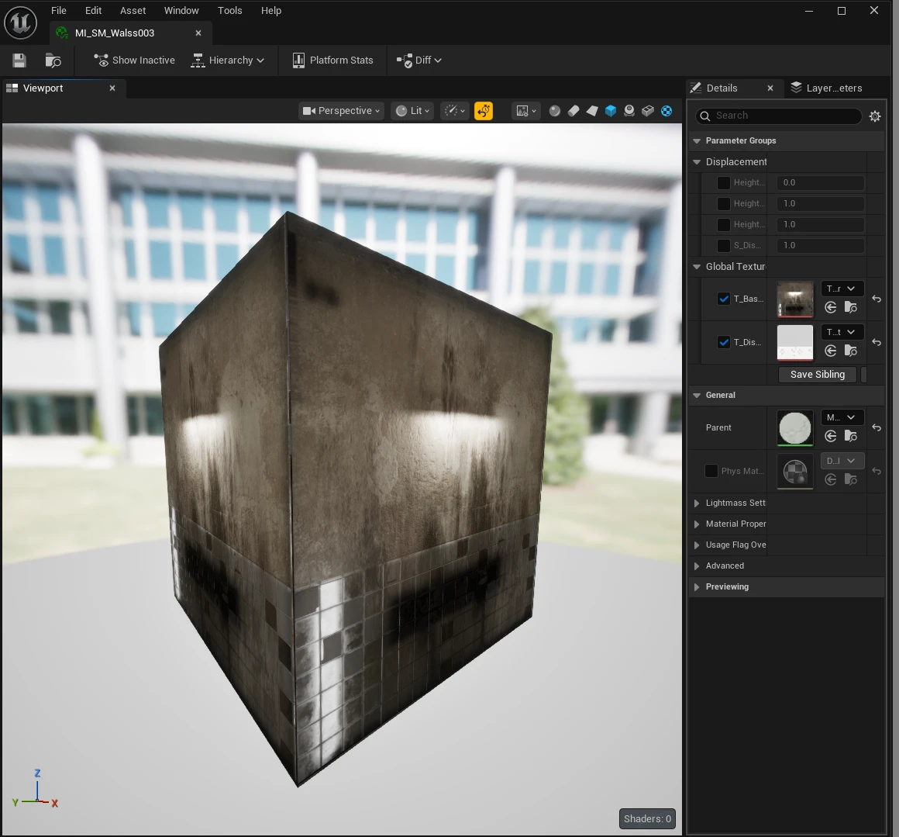 |
| Separate Light Data | Turn Combine Lighting off to save it separately. Scene Lights uses a lighting multiplier. Rendered Scene saves full appearance as HDR Light Data; the generated material uses it directly to avoid applying albedo twice. 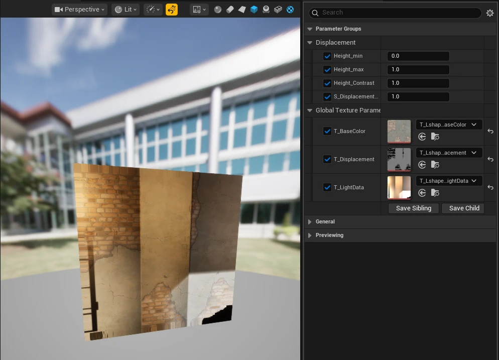 |
Import and sample the combined map as Linear.
Captured Unlit appearance uses BaseColor naming even though it feeds Emissive. Unused Normal, Roughness, Metallic, Specular, AO and ORM exports are skipped. Selected Displacement and Opacity Mask remain available. Separate ordinary albedo is not exported when unused by the Unlit result.
Bake Decals and Mesh Overlay are independent. Select the level receiver and the required output passes, then enable the projection sources.
| Decals | Height Blend |
|---|---|
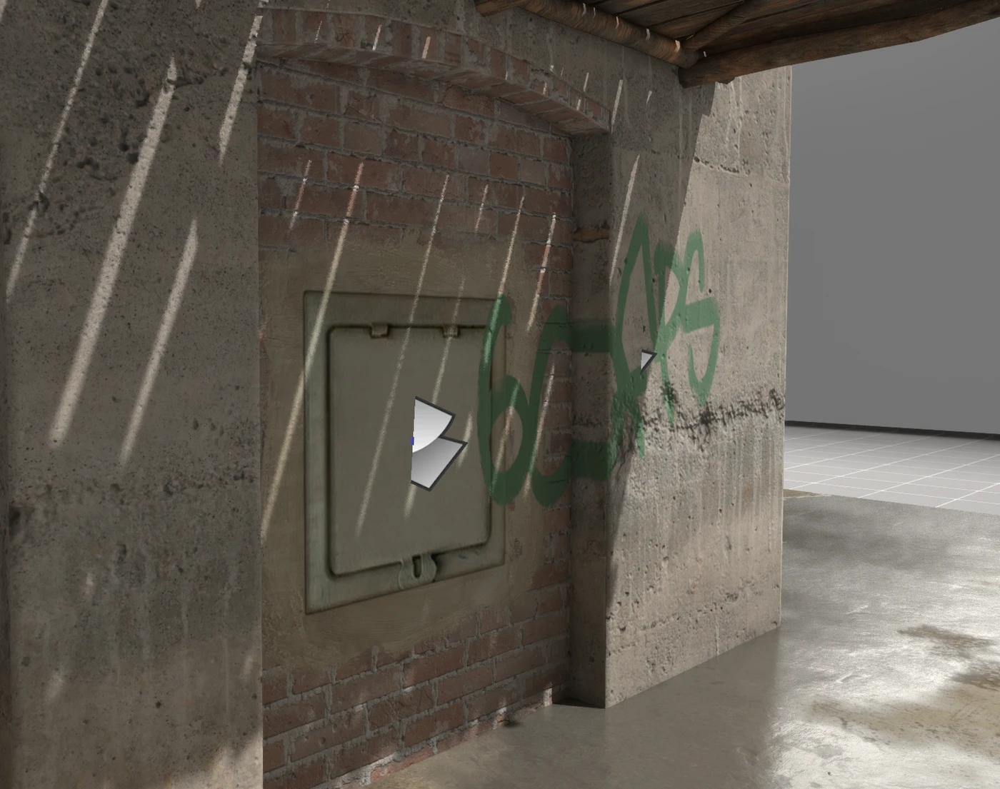 | 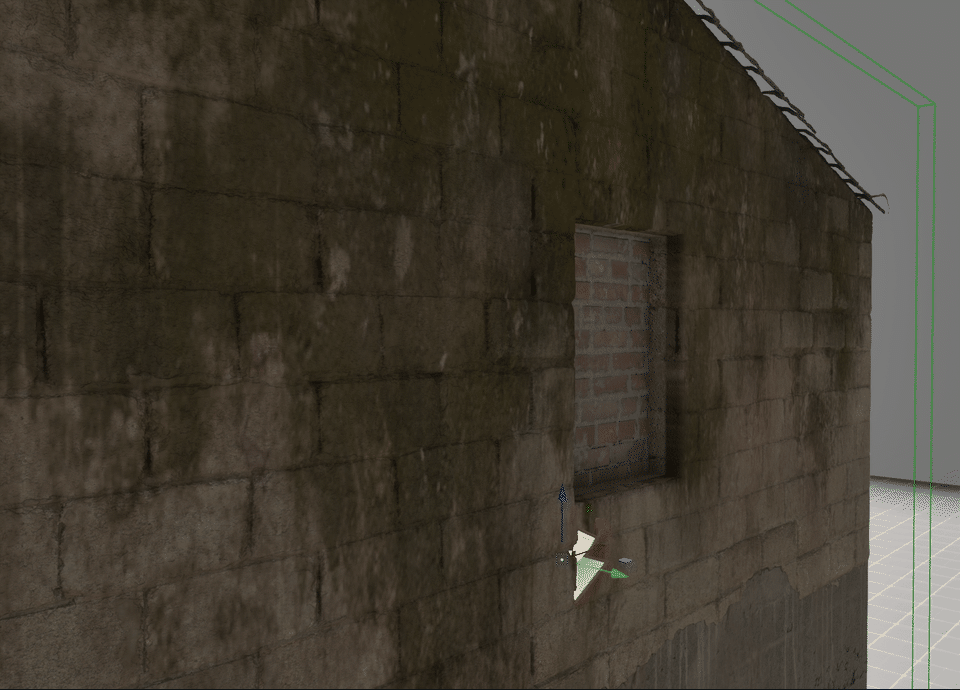 |
| Evaluates decal graphs, UV arithmetic, tint, instance parameters and static switches before projecting selected passes. Respects Sort Order. Deferred-decal UV correction is fixed at 180°, Flip U on and Flip V off; rotation and flip controls are not exposed. Rendered Scene is a separate lighting workflow. | Displacement pass required Adjust the decal’s own Strength and Contrast to blend coverage with receiver height. Defaults: Strength 0.4, Contrast 3. Strong contrast can suppress coverage on raised bricks.Always enable the Displacement pass when using Height Blend. |
| Mesh Overlay | Height Blend |
|---|---|
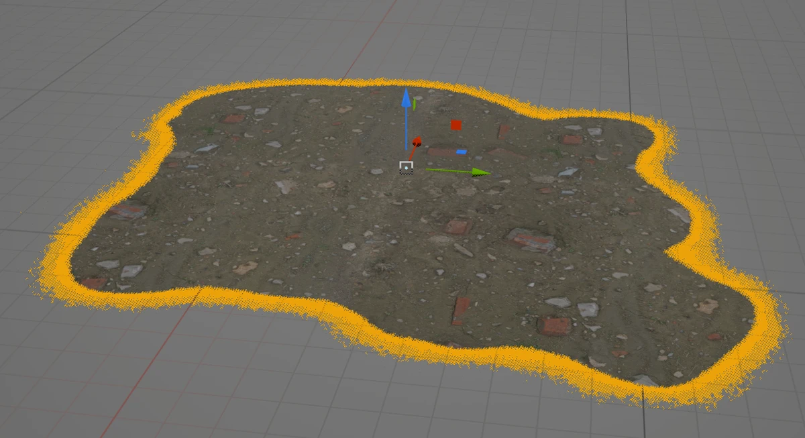 | 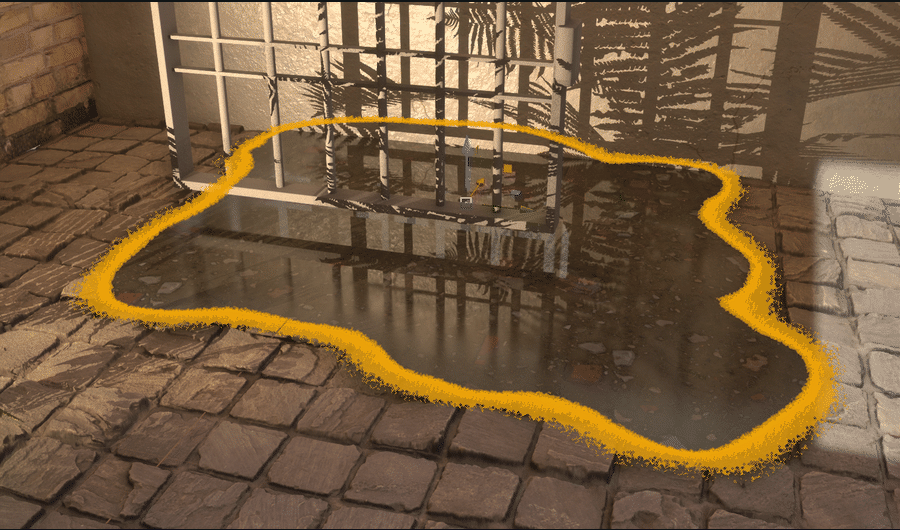 |
| Projects compatible planar mesh cards onto the receiver. See the combined notes below for mapping, projection depth and output limits. | Displacement pass required Uses independent Height Blend, Strength and Contrast controls. Defaults: Strength 0.4, Contrast 3. Adjust coverage against the receiver height; temporarily disable it when diagnosing missing diffuse detail.Always enable the Displacement pass when using Height Blend. |
Mesh Overlay: Flattens nearby compatible planar Static Mesh cards using triangles and UV0. Masked materials preserve holes; Translucent materials blend by opacity. Ordinary 3D props remain physical geometry.
Projection Depth (cm): Applies only to Mesh Overlay. Keep the distance just large enough to reach the intended receiver; excessive depth can project through thin walls.
Supported mapping: Instanced cards, refraction, animated WPO and world/vertex/instance-dependent overlay mapping are unsupported. Hide original cards when comparing the flattened result.
Output passes: Only selected passes are written. Normals are converted to receiver tangent space, and Emissive retains HDR intensity. AO, Roughness and Metallic feed ORM; opacity feeds RGBA. Unlit output skips unused surface-data exports.
Reflections: Rendered Scene can capture roughness-driven highlights, but they become part of a fixed texture. Changing the camera cannot recreate the original moving reflection.
Height Blend: Height Blend can independently reduce diffuse coverage. Temporarily disable it when diagnosing missing surface detail.
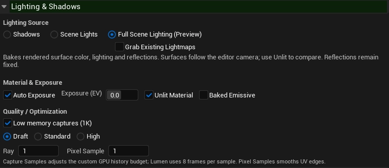
Shadows, Scene Lights, Rendered Scene (Preview), or Existing Baked Lightmap. Enable Light Data or Combine Lighting to activate the controls.
You can bake the scene’s Lumen lighting through Rendered Scene (Preview); the tool is not limited to copying saved Lightmass lightmaps. With Lumen active in the scene, this mode captures its global illumination and reflections into textures. Existing Baked Lightmap is the separate workflow for reading a built and saved Lightmass bake. Choose the source first, then decide how to display or combine the result.
| Source | What is captured | Use it for |
|---|---|---|
| Shadows | Grayscale shadow visibility from supported GPU captures; unsupported receivers use an approximation. | A shadow multiplier with live surface lighting. Shadow Strength: Applies to Shadows: 0 removes darkening, 1 preserves it, higher values darken partial shadows. It is not a brightness control for saved lightmaps or GPU scene lighting. |
| Scene Lights | Light and Shadows: direct lights, sky and shadows. + Postprocess: adds inherited scene GI and indirect-light settings. | Diffuse lighting combined with albedo once. |
| Rendered Scene (Preview) | Visible rendered shading, including Lumen global illumination and reflections when active in the scene, or existing Lightmass lighting. Captures supported scene effects. | Captured appearance, usually with Unlit Material. Reflections stay fixed to capture views. |
| Existing Baked Lightmap | Saved LOD0 Lightmass surface lighting on level Static Mesh components. Excludes Lumen, volumetric lightmaps and stationary direct lighting. | Reuse a built and saved Lightmass bake. |
Point, Spot and Rect Light components are supported, including multiple components inside Blueprint actors. Directional and Sky Lights are also handled. Lights must be registered, visible and affect the world. CPU fallback approximates Rect Light area lighting; it does not reproduce every renderer feature.
| Method | Emissive contribution | Requirements and notes |
|---|---|---|
| Light and Shadows | No emissive GI; GI is disabled. | The Emissive pass records the emitting material itself; it does not calculate illumination on neighboring objects. |
| + Postprocess | Included when the scene GI captures it. | Scene Lights GPU capture requires a registered opaque Default Lit Static Mesh without a Substrate or Nanite override material. Unsupported receivers log a CPU fallback, excluding actual GI. Verify emissive GI in the scene before baking. |
| Rendered Scene | Included when present in rendered shading. | Receiver validation can reject unreliable surfaces. This is a preview workflow, not a guaranteed pixel match to the editor camera. |
| Existing Baked Lightmap | Only emission included in the saved Lightmass bake. | Build and save Lightmass first. Use a valid lightmap coordinate channel with non-collapsed islands, adequate resolution and padding. This reads saved Lightmass data, unlike Rendered Scene. |
| Shared requirements: Use a level receiver and unique, non-overlapping bake UVs. Hidden lights and occluders are ignored. Emissive GI depends on scene settings and renderer limitations. | ||
Full-scene lighting captures with Rendered Scene (Preview) on complex meshes at 2K or 4K may produce localized artifacts or incomplete coverage in some areas. Test a smaller bake first and inspect the final textures before replacing production materials.
The progress surface count represents capture groups, not material slots or texture passes. Fragmented geometry, UV layout, output resolution and retries affect it. Draft lowers sampling work but cannot remove surface grouping cost. Overlapping/tiled UVs can take longer and produce conflicting texels; use the mesh's unique lighting channel.
Auto Exposure takes capture-view exposure once for the bake. Exposure EV: +1 doubles brightness; −1 halves it. Capture views, reflections and GI can affect appearance matching.
Draft, Standard and High set capture budgets and UV sampling. Ray counts apply to CPU fallback; custom GPU capture sampling uses its own frame budget. Pixel Samples controls UV sampling. Lumen quality follows the scene post-process settings or engine defaults.
| Material mode | How it behaves | Use it for | Graph example |
|---|---|---|---|
| Default Lit | With Unlit Material and Baked Emissive off, baked surface textures respond to scene lights. Lighting already captured into Base Color can be shaded again. | Surface-material bakes that should react to changing lights, such as ordinary walls, props, wood and metal. Prefer surface textures without combined lighting when you want live lighting to determine the result. | 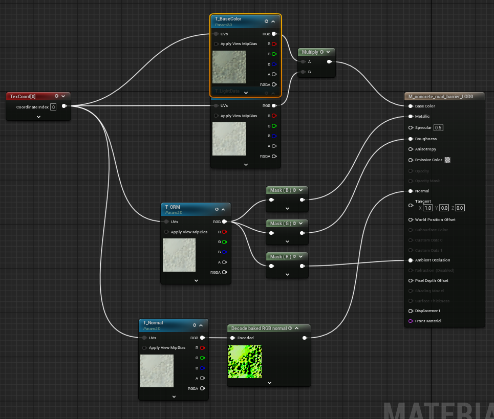 |
| Unlit Material | Displays captured appearance through exposure-compensated Emissive. Unused Normal, Roughness, Metallic, Specular, AO and ORM exports are skipped; selected Displacement and Opacity Mask remain available. | Preserving baked scene appearance, including captured lighting and reflections, without additional surface shading from live lights. Useful with Rendered Scene (Preview); captured reflections remain fixed to capture views. | 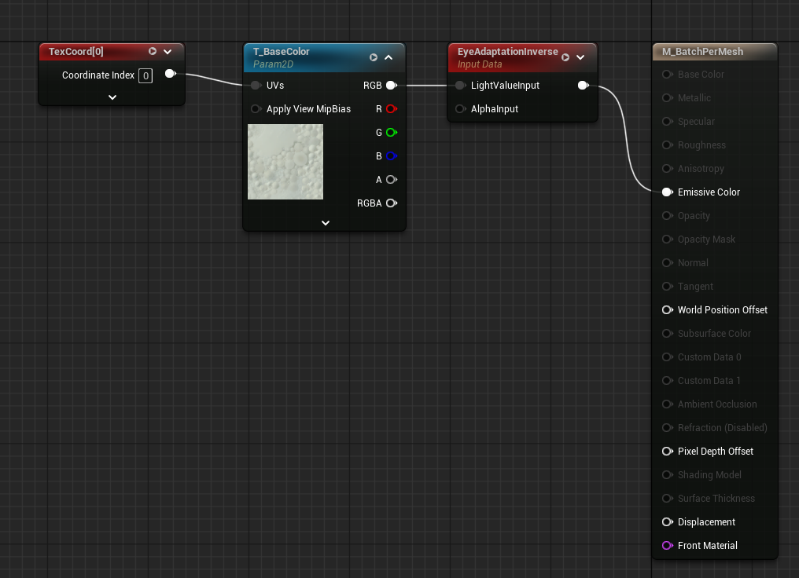 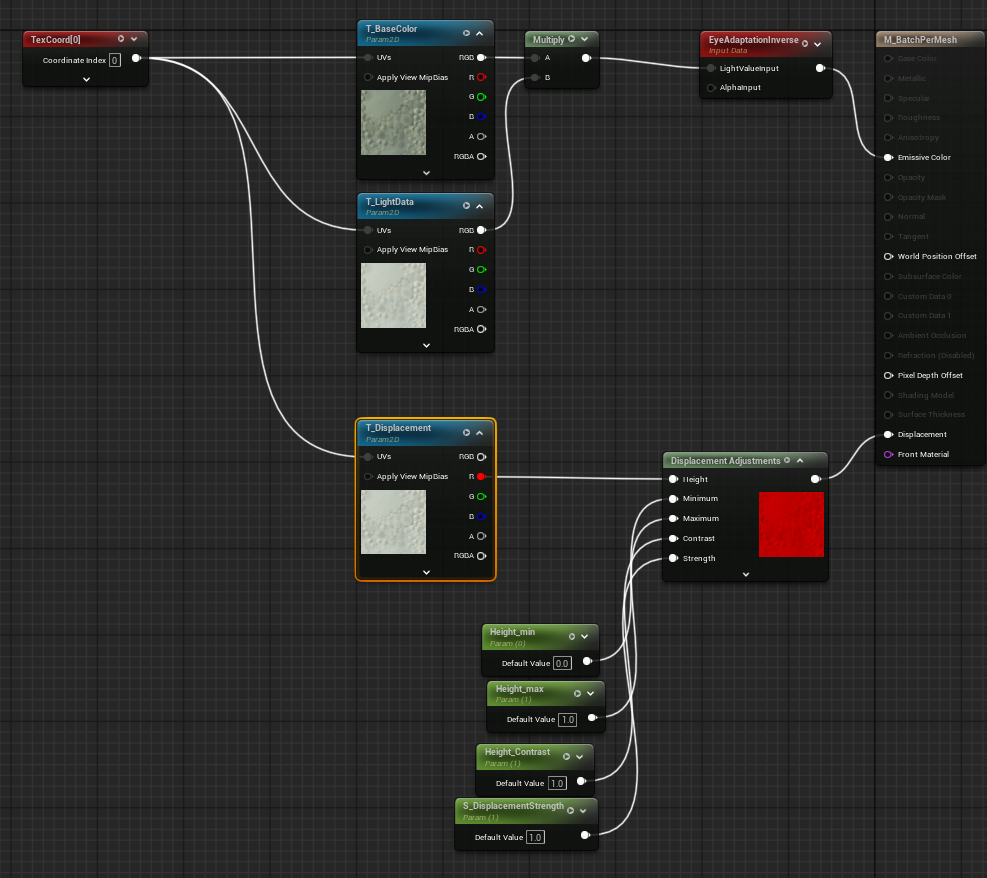 |
| Baked Emissive | Adds baked lighting through exposure-compensated Emissive in a Default Lit material while scene lights continue to shade Base Color. Separate from exporting the source material's actual Emissive pass. | Combining a baked lighting contribution with live surface lighting. Check brightness where baked and live lighting overlap. | 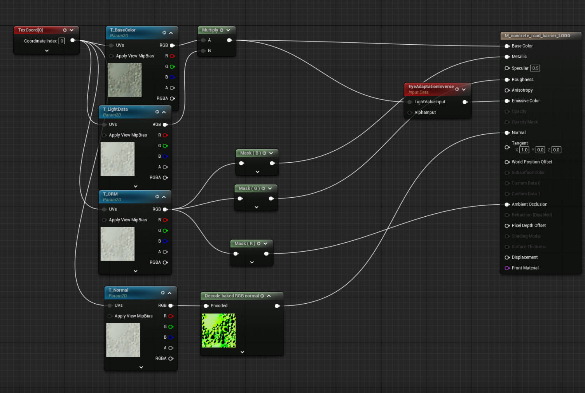 |
Unlit Material and Baked Emissive are mutually exclusive. Enable Auto Material and rebake after changing modes to update the generated material graph.
On by default. Caps internal GPU captures at 1024 pixels to reduce memory use. Output Texture Size is unchanged. Reflections and surface detail may soften, especially in shared wall/floor frames. Turn off for the original capture density; saved preset choices are respected.
Draft / Standard / High set capture budgets and UV samples. They do not force Lumen quality: resolved user post-process settings or engine defaults are inherited. See capture budgets.
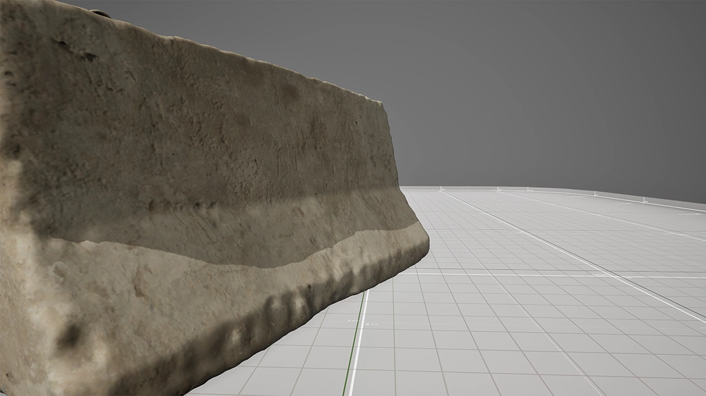
Quick previewRay: 1 · Pixel Sample: 1
Shortest bake time; less temporal averaging.
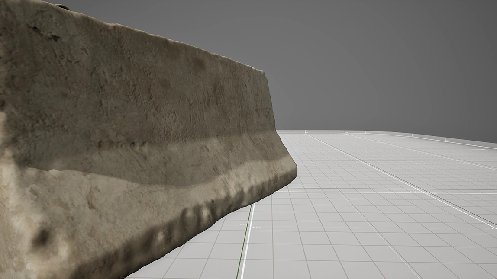
Balanced qualityRay: 8 · Pixel Sample: 1
More temporal averaging; longer bake time.
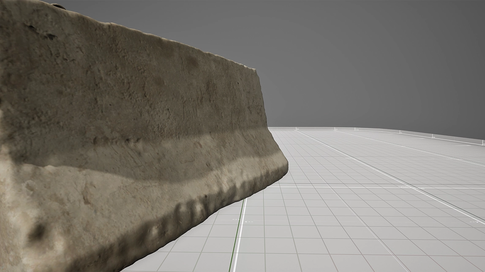
Final qualityRay: 32 · Pixel Sample: 4
Most averaging and UV sampling; longest bake time.
Higher quality increases bake time: Standard uses more capture frames than Draft, while High adds more frames and UV samples. Compare the examples at full size to inspect surface detail and shadow smoothness; actual bake time depends on scene complexity, output resolution and hardware.
| Quality | Fresh capture frames | UV samples |
|---|---|---|
| Draft | 32 | 1 |
| Standard | 64 | 1 |
| High | 128 | 4 |
Eligible history refreshes use 8 frames; the last 8 frames are averaged. This is transient capture history within a bake, not a persistent lighting-result cache. Custom GPU Capture Samples use 8 frames per sample with Lumen. These budgets do not replace the scene’s Lumen quality settings.
Bake-only Lumen AO adjustmentGPU baking temporarily disables Lumen Short Range AO to avoid the reproduced blocky dark AO patches, then restores the original console-variable value and priority on exit. CPU UV and Existing Baked Lightmap workflows retain their behavior. Existing generated textures need a rebake to receive the change.
Current builds reduce memory and redundant work through exact staging readback, compact CPU buffers, sequential height variants, skipped zero-contribution height captures and release of completed-phase resources. Shared planar framing remains. Black out covered internal faces and the persistent lighting-result cache have been removed; legacy preset values have no effect. Bake time depends on scene complexity, settings and hardware.
Legacy and Substrate Slab BaseColor, Roughness, AO and Normal passed small bake checks; full Substrate workflows are not universally validated. Successful builds and native checks do not establish live editor acceptance for every scene.
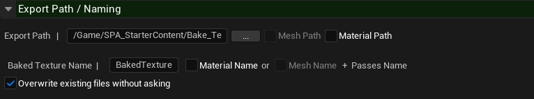
/Game/BakedTextures├─ T_Wall01_BaseColor
├─ T_Wall01_Normal
└─ T_Wall01_ORM
Maximum 30 characters. Use letters, numbers, underscore, and hyphen.
Saves output relative to the selected mesh or material rather than the entered folder.
Uses T_<MaterialName>_<Pass>, without extra BakedTexture text.
Uses the mesh/scene name and pass for per-mesh output. Keep differently lit instances uniquely named.
Use a valid /Game/… export folder and a short base name. Press Bake, then inspect seams, normal orientation, color space, and asset naming.
Export Path
Use a valid Unreal package folder below /Game, not a Windows filesystem path.
Mesh Name / Material Name
Uses T_<Name>_<Pass>. Source-name mode does not append the extra BakedTexture text. Scene labels are used where the naming workflow provides them.
Custom base name
Baked Texture Name supplies the custom base. Use up to 30 letters, numbers, underscores or hyphens. A missing texture prefix is added.
UV / slot suffixes
UV1+ and applicable slot suffixes distinguish variants. Use unique scene-instance names when baked lighting differs.
Prefixes
T_ textures, M_ masters, MI_ instances.
Pass identity
_BaseColor for albedo or captured appearance; _Normal, _ORM, _Displacement, _OpacityMask, and _LightData for separately saved lighting. Actual Emissive remains separate.
/Game/BakedTextures/T_Wall01_BaseColor
/Game/BakedTextures/T_Wall01_Normal
/Game/BakedTextures/T_Wall01_DisplacementSource name + pass; no extra BakedTexture text.
Enable this export option to replace matching outputs without a prompt. Leave it off to keep overwrite confirmation. Presets store the choice.
Assign the intended Static or Skeletal Mesh actor/component from the Level Editor in Mesh Settings. Choose at least one pass and a valid /Game output path. A panel Material is optional when the selected slot has a valid material. In Batch Meshes, use Add Selected to queue scene components.
Use Single Mesh with valid Static Mesh LOD0 geometry and at least one material slot. Skeletal Meshes, Rendered Scene (Preview) and Existing Baked Lightmap are not supported by UV Builder. See UV Builder requirements.
For lighting and projection, choose unique UVs across every included surface. Intentional tiling or stacking can work for material-only bakes; validation is optional. Enable Dilation UV and start with Pixel Cover 3. Increase padding only when island spacing allows; reduce it if neighboring colors bleed. Pixel Cover 0 means unlimited padding for regular textures. See padding examples.
Texture Size, capture quality, geometry, UV layout and receiver retries affect time. Test at 1K with Draft, then raise settings after checking the result. Low memory captures (1K) limits capture resolution; it does not eliminate output sampling or surface-grouping costs. See capture budgets.
Low memory captures (1K) limits internal capture size independently of Texture Size. Disable it for a small comparison bake if more capture detail is needed. Baked reflections remain fixed to capture views; increasing output resolution or quality does not recreate moving reflections.
Enable World Space Correction and assign the intended scene component so its transform and bounds are preserved.
Check the lighting source and generated material mode. Shadows stores visibility; Scene Lights captures illumination; Rendered Scene captures appearance; Existing Baked Lightmap reads saved Lightmass. Default Lit can shade captured BaseColor again. Inspect logs for a CPU fallback, which excludes actual GI.
Check the source placement and receiver. Deferred-decal UV correction is fixed at 180°, Flip U on and Flip V off. Mesh Overlay uses source UV0; keep Projection Depth just large enough to reach the intended receiver. Hide original overlay cards when comparing the flattened result.
Compare with Height Blend disabled, then reduce the source’s Strength or Contrast. Decals and overlays have independent controls and require Displacement. Strong blending can suppress coverage on raised surfaces.
ORM uses Linear sampling: R = AO, G = Roughness, B = Metallic. Black unused normal pixels are intentional; generated materials decode them as a flat normal. For opacity, use the source Opacity Mask input. RGBA stores it in Albedo alpha; Mask Threshold 0 preserves grayscale. Rebake with Auto Material after changing graph options.
Use + Postprocess or Rendered Scene with working scene GI. Light and Shadows and CPU fallback exclude emissive GI. Existing Baked Lightmap includes only emission already in the saved Lightmass bake. The Emissive pass alone records the emitting material, not nearby illumination.
Build and save Lightmass lighting. Check the mesh lightmap coordinate channel, valid islands, padding and resolution. This mode reads saved Lightmass data, not Lumen lighting.
GLB does not represent every baked pass or Unreal-specific material feature. Keep separately baked textures for unsupported inputs. Disable Export JPG for lossless texture images, or lower Compression to raise JPEG Quality. Displacement textures and Nanite tessellation are not exported as GLB displacement.
Select Displacement and enable Auto Material, then rebake. The generated instance exposes Height_min, Height_max, Height_Contrast and S_DisplacementStrength. Effective source-instance Magnitude, Center, tessellation and fade settings are retained. See instance controls.
Open the matching level and reload the preset. Missing references warn while valid settings still load; replace unresolved selections. Invalid or unsupported settings leave the current setup unchanged.
Inspect logged receiver, occluder, geometry and displacement details. Strict receiver validation can reject unreliable surfaces. Test the affected mesh in isolation before repeating the full batch.
Turn complex material and scene setups into reusable texture-based assets.
Bake lighting, decals and overlays into textures for environments with fixed lighting. Reduce reliance on layered materials and separate projection sources in the delivered scene.
Prepare simpler texture-based materials and atlases. Choose output resolution and passes for your target device, then profile the finished scene.
Flatten procedural material evaluation, combine material slots, and pack AO, Roughness and Metallic into ORM. Use UV Builder when a new mesh with one material slot is appropriate.
Capture scene lighting and shadows for reusable props, rooms and environment pieces. Choose Unlit for captured appearance or a lit material when live lighting must still contribute.
Bake graffiti, dirt and compatible mesh cards into receiver textures, with independent Height Blend controls. Remove the original projection sources from the final setup after checking the result.
Deliver baked textures, generated Unreal materials and selected-mesh GLB exports. Keep separate texture assets for passes and Unreal features that GLB does not represent.
SPA Materials Baker runs in the Unreal Editor to prepare assets. Performance depends on the resulting materials, texture memory, geometry and target hardware. Captured lighting and reflections are fixed; they do not update with moving lights or viewpoints.